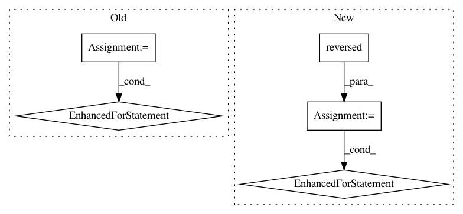

abc343bce8266d2867528956ddbe78d6b83d300b,perfkitbenchmarker/linux_benchmarks/iperf_benchmark.py,,Run,#Any#,144
Before Change
logging.info("Iperf Results:")
// Send traffic in both directions
for originator in [0, 1]:
sending_vm = vms[originator]
receiving_vm = vms[originator ^ 1]
// Send using external IP addresses
if vm_util.ShouldRunOnExternalIpAddress():
results.append(_RunIperf(sending_vm,
receiving_vm,
receiving_vm.ip_address,
"external"))
// Send using internal IP addresses
if vm_util.ShouldRunOnInternalIpAddress(sending_vm,
receiving_vm):
results.append(_RunIperf(sending_vm,
receiving_vm,
receiving_vm.internal_ip,
"internal"))
return results
def Cleanup(benchmark_spec):
After Change
logging.info("Iperf Results:")
// Send traffic in both directions
for (sending_vm, receiving_vm) in vms, reversed(vms):
// Send using external IP addresses
if vm_util.ShouldRunOnExternalIpAddress():
results.append(_RunIperf(sending_vm,
receiving_vm,
receiving_vm.ip_address,
"external"))
// Send using internal IP addresses
if vm_util.ShouldRunOnInternalIpAddress(sending_vm,
receiving_vm):
results.append(_RunIperf(sending_vm,
receiving_vm,
receiving_vm.internal_ip,
"internal"))
return results
def Cleanup(benchmark_spec):
In pattern: SUPERPATTERN
Frequency: 4
Non-data size: 5
Instances
Project Name: GoogleCloudPlatform/PerfKitBenchmarker
Commit Name: abc343bce8266d2867528956ddbe78d6b83d300b
Time: 2015-12-01
Author: hildrum@google.com
File Name: perfkitbenchmarker/linux_benchmarks/iperf_benchmark.py
Class Name:
Method Name: Run
Project Name: pantsbuild/pants
Commit Name: 38d994a74f40e481f10a7dd90fbddeb0196f0b4a
Time: 2014-07-02
Author: john.sirois@gmail.com
File Name: src/python/pants/engine/round_engine.py
Class Name: RoundEngine
Method Name: _prepare
Project Name: biocore/scikit-bio
Commit Name: 791c934318c81fb768275a9abb2f53e919cb9813
Time: 2015-03-26
Author: jai.rideout@gmail.com
File Name: skbio/sequence/tests/test_sequence.py
Class Name: SequenceTests
Method Name: test_reversed
Project Name: kengz/SLM-Lab
Commit Name: ec849adaf4ceb42ed52ca142c839f627c34b9434
Time: 2018-05-21
Author: kengzwl@gmail.com
File Name: slm_lab/agent/algorithm/reinforce.py
Class Name: Reinforce
Method Name: calc_advantage